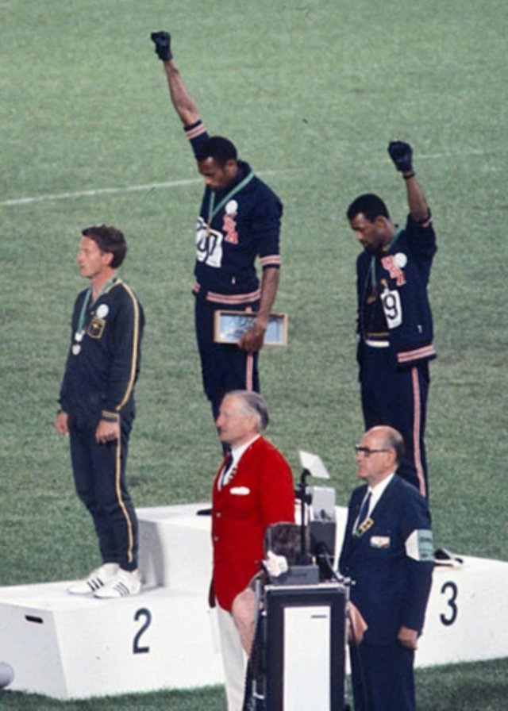

Tommie Smith and John Carlos on the Podium, Mexico City Olympics
Angelo Cozzi · 16 October 1968 · Photograph, colour
In copyright. Look and learn: shown for study, not for download.
Tommie Smith had won the 200 metres that morning, 16 October 1968, in a world record of 19.83 seconds; John Carlos was third. Both meant to bring black gloves, but Carlos left his in the Olympic Village, and it was the Australian silver medallist, Peter Norman, who suggested he wear Smith's left one. The two Americans stood without shoes, in black socks. All three wore human-rights badges. Smith and Carlos were expelled from the Games. Angelo Cozzi took this picture for the Italian publisher Mondadori.